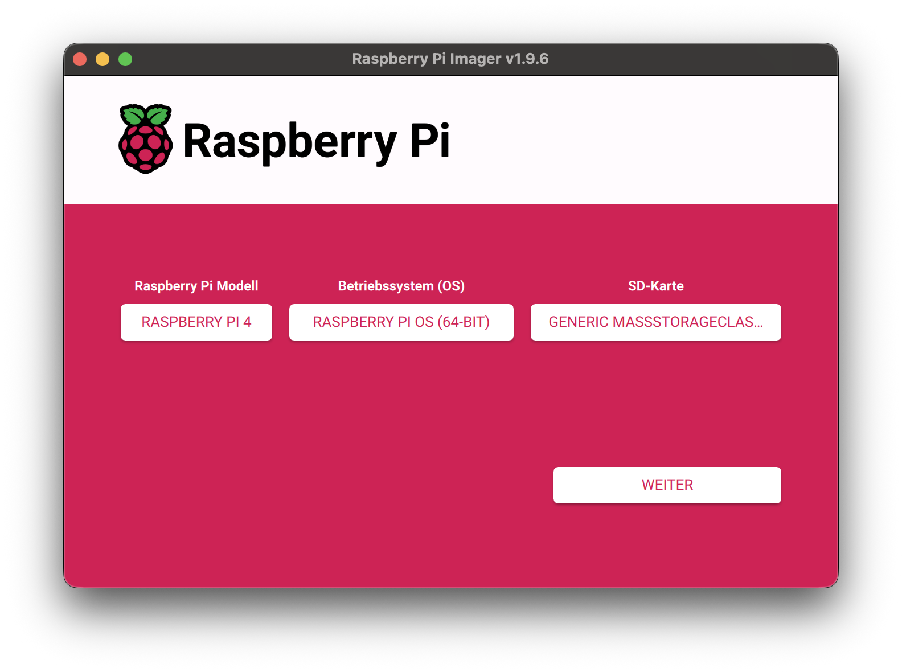
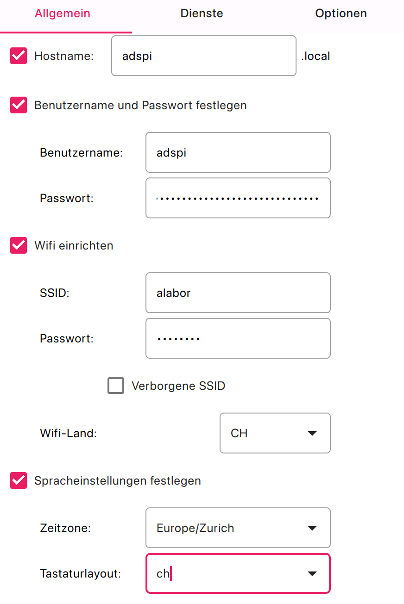
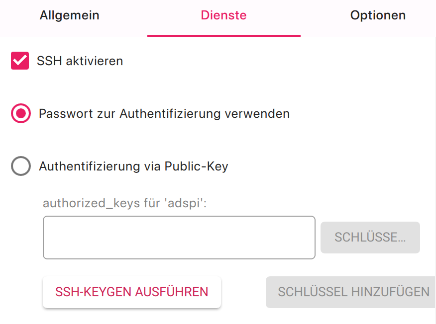
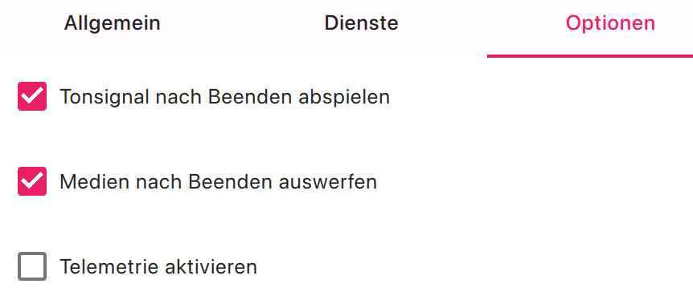
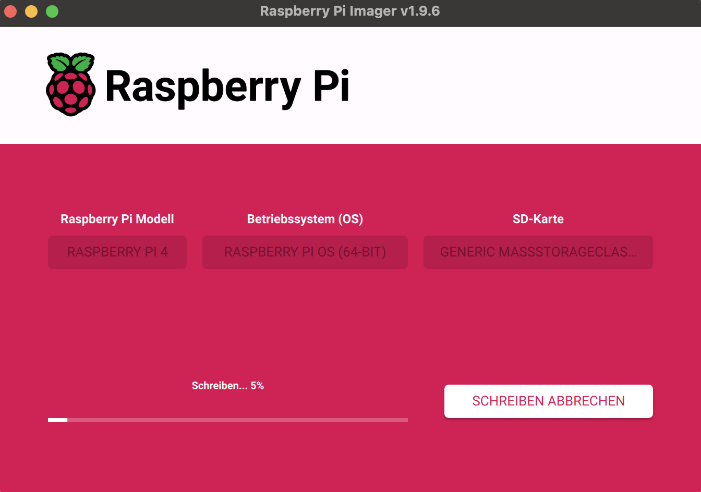
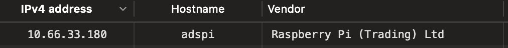
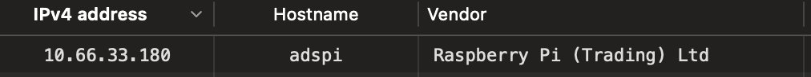
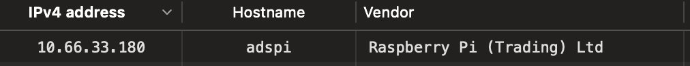

Anleitung.
Raspberry Pi Setup
Als erstes installieren wir das OS auf der SD-Karte:
- Raspberry Pi Imager herunterladen und installieren
- SD Karte an das MacBook anschliessen
- Im Raspberry Pi Imager das Modell, OS und die SD Karte auswählen
- Im nächsten Schritt die Einstellungen anpassen, siehe Bilder
- OS auf die SD Karte schreiben lassen. Danach die SD Karte ans Raspberry Pi anschliessen
- Über USB-C ein Netzteil anschliessen (5V, min. 3A)
- Das Raspberry Pi bootet automaisch. Die rote LED sollte leuchten und die grüne blinken
- Durch einen LAN Scan kann die IP des PIs gefunden werden, siehe Bild
- Per SSH mit dem Raspberry Pi verbinden
- Das OS updaten, Python und Blinka installieren, siehe Bild





 


#SSH Verbindung (Name und IP anpassen)
ssh [BENUTZERNAME@IP]